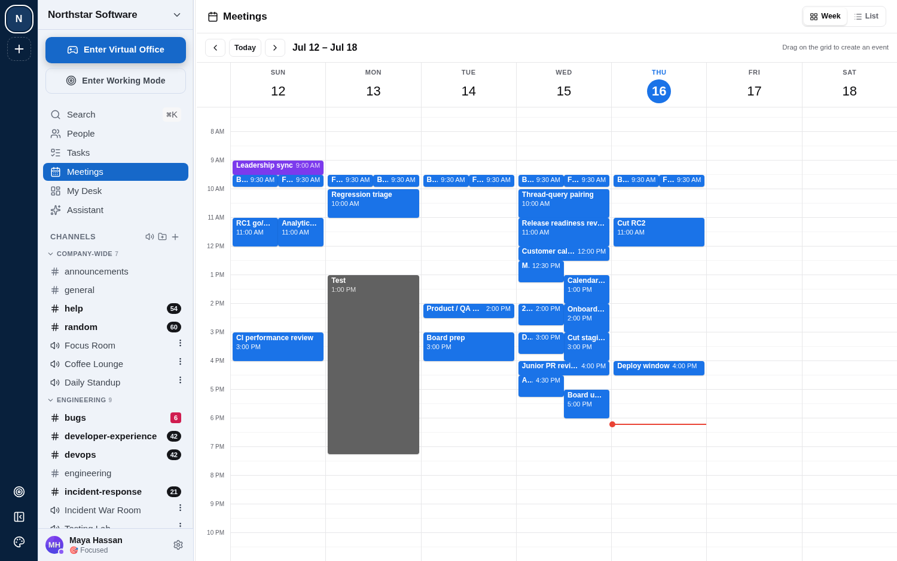
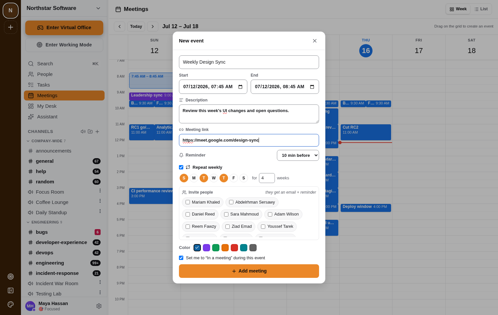

Features / A shared team calendar
A shared team calendar
WebOne calendar for the whole workspace, drag-to-create on the week grid, with a scheduler that reminds people and auto-updates status for a running meeting.

Every meeting can carry a description and a join link, and can repeat weekly on whichever days you pick — for however many weeks you need.
- Repeat creates real, independent events up front (not a live recurrence rule) — editing one occurrence later never touches the others.
- A reminder, a join link, and who's invited — all in one form.
